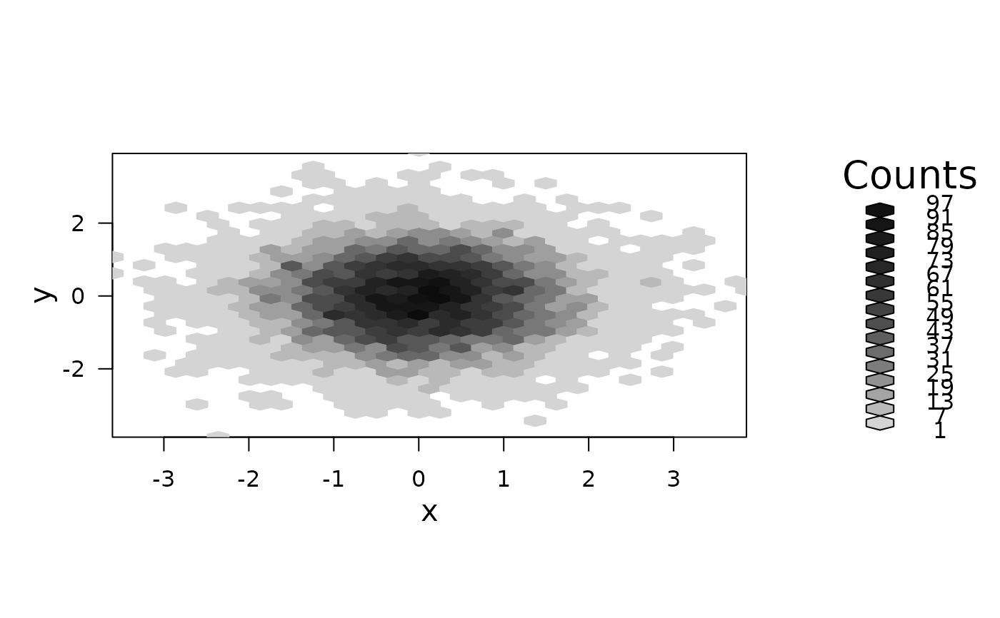
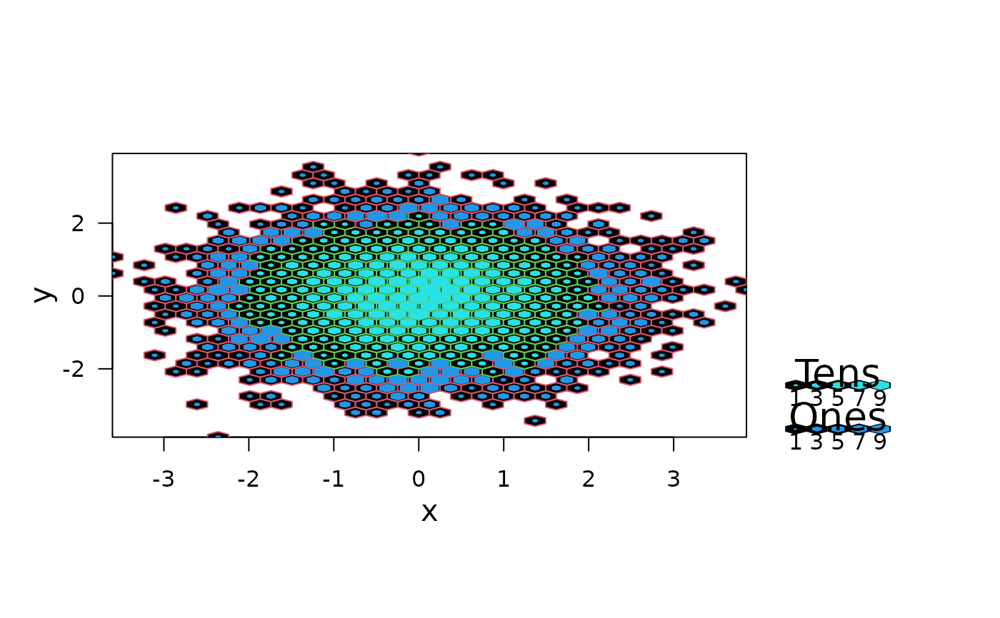
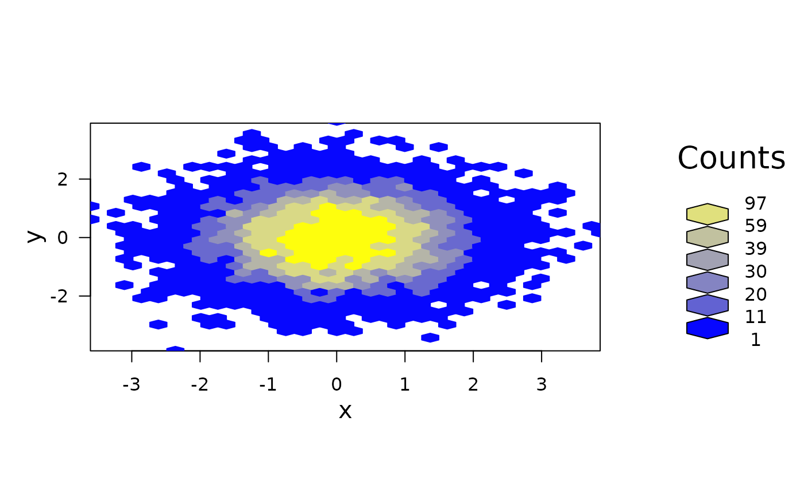
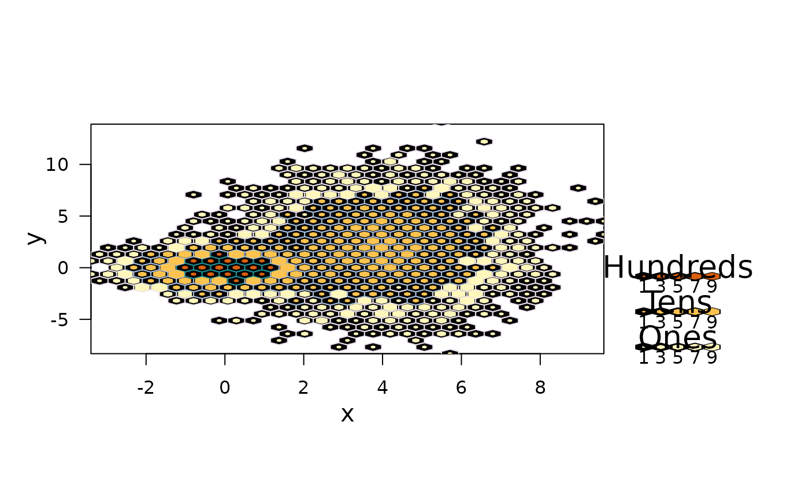
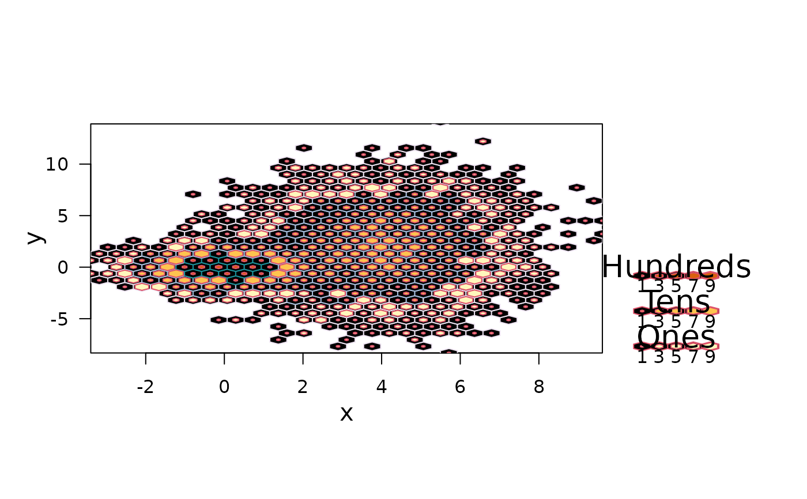
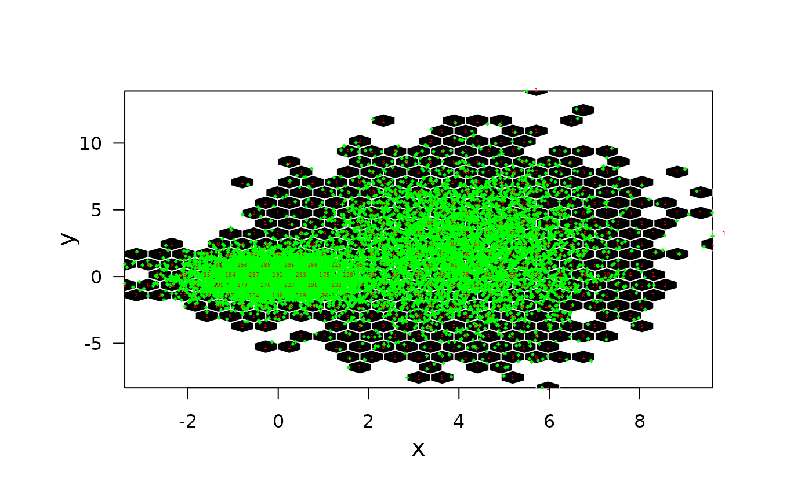

gplot.hexbin.RdPlots Hexagons visualizing the counts in an hexbin object. Different styles are availables. Provides a legend indicating the count representations.
<!-- %% In future: No longer export gplot.hexbin() ! -->
gplot.hexbin(x, style = "colorscale", legend = 1.2, lcex = 1,
minarea = 0.04, maxarea = 0.8, mincnt = 1, maxcnt = max(x@count),
trans = NULL, inv = NULL, colorcut = seq(0, 1, length = min(17, maxcnt)),
border = NULL, density = NULL, pen = NULL,
colramp = function(n) LinGray(n,beg = 90,end = 15),
xlab = "", ylab = "", main = "", newpage = TRUE,
type = c("p", "l", "n"), xaxt = c("s", "n"), yaxt = c("s", "n"),
clip = "on", verbose = getOption("verbose"))
<!-- %% FIXME: This is the S4 plot method for 'hexbin' -->
<!-- %% currently also exported "standalone" - for testing,debugging.. -->
<!-- %% we'd really don't want to repeat the argument list; use \synopsis{.} ? -->
# S4 method for hexbin,missing
plot(x, style = "colorscale", legend = 1.2, lcex = 1,
minarea = 0.04, maxarea = 0.8, mincnt = 1, maxcnt = max(x@count),
trans = NULL, inv = NULL, colorcut = seq(0, 1, length = min(17, maxcnt)),
border = NULL, density = NULL, pen = NULL,
colramp = function(n) LinGray(n,beg = 90,end = 15),
xlab = "", ylab = "", main = "", newpage = TRUE,
type = c("p", "l", "n"), xaxt = c("s", "n"), yaxt = c("s", "n"),
clip = "on", verbose = getOption("verbose"))an object of class hexbin.
string specifying the style of hexagon plot,
see grid.hexagons for the possibilities.
numeric width of the legend in inches of FALSE.
In the latter case, or when 0, no legend is not produced.
characters expansion size for the text in the legend
fraction of cell area for the lowest count
fraction of the cell area for the largest count
cells with fewer counts are ignored.
cells with more counts are ignored.
function specifying a transformation for
the counts such as sqrt.
the inverse transformation of trans.
vector of values covering [0, 1] that determine
hexagon color class boundaries and hexagon legend size boundaries.
Alternatively, an integer (<= maxcnt) specifying the
number of equispaced colorcut values in [0,1].
color for polygon borders and filling of
each hexagon drawn, passed to grid.hexagons.
function accepting an integer n as an argument and
returning n colors.
x- and y-axis label.
main title.
should a new page start?.
strings to be used (when set to "n") for
suppressing the plotting of hexagon symbols, or the x- or y-axis,
respectively.
either 'on' or 'off' are the allowed arguments, when on everything is clipped to the plotting region.
logical indicating if some diagnostic output should happen.
This is the (S4) plot method for hexbin (and
erodebin) objects (erodebin-class).
To use the standalone function
gplot.hexbin() is deprecated.
For style, minarea etc, see the Details section of
grid.hexagons's help page.
The legend functionality is somewhat preliminary. Later versions may include refinements and handle extreme cases (small and large) for cell size and counts.
All arguments of gplot.hexbin can also be used for the S4
plot method.
invisibly, a list with components
the hexViewport constructed and used.
if a legend has been produced, its
viewport.
see in grid.hexagons.
## 1) simple binning of spherical normal:
x <- rnorm(10000)
y <- rnorm(10000)
bin <- hexbin(x,y)
## Plot method for hexbin !
## ---- ------ --------
plot(bin)

# nested lattice
plot(bin, style= "nested.lattice")

# controlling the colorscheme
plot(bin, colramp=BTY, colorcut=c(0,.1,.2,.3,.4,.6,1))

## 2) A mixture distribution
x <- c(rnorm(5000),rnorm(5000,4,1.5))
y <- c(rnorm(5000),rnorm(5000,2,3))
bin <- hexbin(x,y)
pens <- cbind(c("#ECE2F0","#A6BDDB","#1C9099"),
c("#FFF7BC","#FEC44F","#D95F0E"))
plot(bin, style = "nested.lattice", pen=pens)

# now really crazy
plot(bin, style = "nested.lattice", pen=pens,border=2,density=35)

# lower resolution binning and overplotting with counts
bin <- hexbin(x,y,xbins=25)
P <- plot(bin, style="lattice", legend=FALSE,
minarea=1, maxarea=1, border="white")
##
library("grid")
pushHexport(P$plot.vp)
xy <- hcell2xy(bin)
# to show points rather than counts :
grid.points(x,y,pch=18,gp=gpar(cex=.3,col="green"))
grid.text(as.character(bin@count), xy$x,xy$y,
gp=gpar(cex=0.3, col="red"),default.units="native")
popViewport()

# Be creative, have fun!